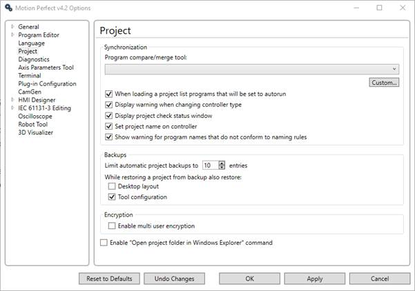
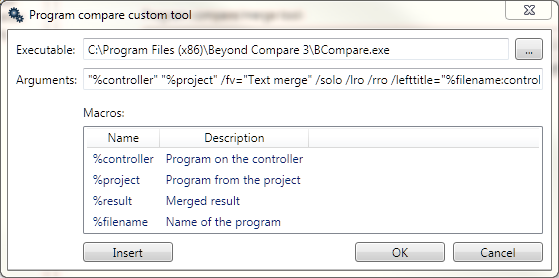
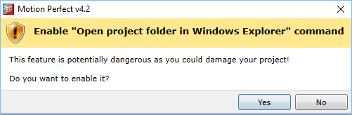

This allows the user to select a program to use to compare the difference between the copy a program on the controller and the one in the project. It allows the user to configure any program which can compare text files. A list of common text file comparison programs is given in the drop down list.
Clicking on the "Custom" button will display the "Program Compare custom tool" dialog which allows the user to specify any suitable program already installed on the PC and which command line arguments are to be used.

If you do not have a suitable text file compare program installed on your computer, WinMerge can be downloaded free of charge from winmerge.org
When Loading a Project List Programs that Will be Set to Auto-run - If checked, a dialog will be displayed if any programs are set to auto-run. This allows the user to review and change the auto-run programs.
Display Warning when Changing Controller Type - If checked, a warning is displayed if the target controller is different from the one recorded in the project.
Display Project Check Status Window - If checked, a Project Status Window when a project check is completed.
Set Project Name on Controller - If checked, the project name will be stored on the controller.
Show Warnings for Program Names that do not Conform to Naming Rules - If checked, a warning will be shown if any program names do not conform to the naming rules. In the past, older versions of Motion Perfect have allowed characters in program names which were causing some processes on the controller or in Motion Perfect to fail under certain circumstances. To prevent this, Motion Perfect is stricter on how programs can be named.
This allows the user to control how many automatic backups are retained and what to what information to restore when a backup is loaded.
Desktop Layout – If checked, the last stored desktop layout will also be restored.
Tool Configuration – If checked, the last stored tool configuration will also be restored.
Enable multi-user Encryption – If checked support for multi-user encryption is enabled.
If checked a menu item in the project part of the main menu is enabled which provides an easy means of opening the folder for the current project in Windows File Explorer.
If you change any file in the project directory or in its subdirectories you risk corrupting the project which may mean the Motion Perfect will not be able to load all or part of the project.
If you try and enable this option then a warning dialog will be displayed.
